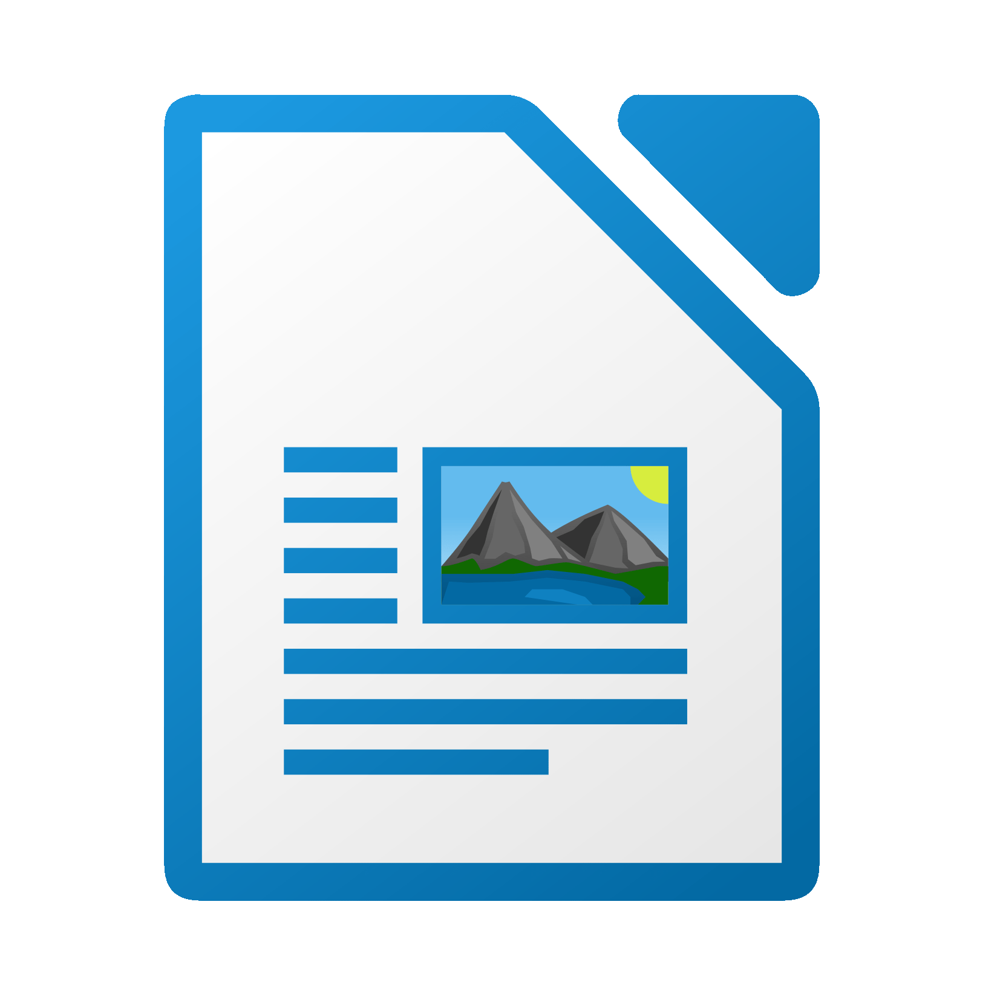

FOSS give you next freedoms:
- The freedom to run the program as you wish, for
any purpose (freedom 0).
- The freedom to study how the program works, and
change it so it does your computing as you wish
(freedom 1). Access to the source code is a
precondition for this.
- The freedom to redistribute copies so you can help others (freedom 2).
- The freedom to distribute copies of your modified
versions to others (freedom 3). By doing this you can give the whole community a chance to benefit from your changes. Access to the source code is a precondition for this
Good open-source programs:
| Name of program |
Description |
| OBS-Studio |
OBS Studio is a free, open-source, and cross-platform screencasting and streaming app. It is available for Windows, macOS, Linux distributions, and BSD. OBS Project raises funds on Open Collective and Patreon |
GIMP  |
GIMP is a free and open-source raster graphics editor used for image manipulation (retouching) and image editing, free-form drawing, transcoding between different image file formats, and more specialized tasks.
|
| LibreOffice
 |
LibreOffice is a free and open-source office productivity software suite, a project of The Document Foundation (TDF). It was forked in 2010 from OpenOffice.org, an open-sourced version of the earlier StarOffice. The LibreOffice suite consists of programs for word processing, creating and editing of spreadsheets, slideshows, diagrams and drawings, working with databases, and composing mathematical formulae. It is available in 115 languages. |